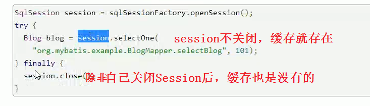

Mybatis原理/自己实现一个Mybatis
Mybatis 使用案例
有这么一张表
先简单用一下Mybatis(和Spring整合)
http://www.mybatis.org/spring/
数据源有很多，比如c3p0,druid,Spring也有内置的数据源 ,叫DriverManagerDataSource
上图的DataSource会自动注入到下面的SQLSessionFactoryBean中(它在构造函数中依赖了)
mybatis官网的截图
意思是你定义好了一个mapper接口，然后通过一个xml配置将一个MapperFactoryBean加入到Spring中
这种方式比较麻烦，你每定义一个Mapper就要声明一下
其实有更加简便的方式，让MapperFactory自己去找mappers
http://www.mybatis.org/spring/mappers.html#scan

然后开始用Anno加载
上面的confi的类还需要加Spring的bean的扫描
等同于
AnnotationConfigApplicationContext的构造方法需传入Config的Java类
结果:
Mybatis的使用很简单，mybatis与Spring的整合也很简单
本内容主要讲解Mybatis源码和如何实现而不是Mybatis的使用，故使用部分比较粗略
Mybatis运行原理
Mybatis如何把一个CityDao这么一个接口变成了一个对象 ，使我们能够调用其query方法（CityService调用了CityDao的query） ？
答案就是动态代理
动态代理有JDK的动态代理，CGLib的动态代理，
http://www.mybatis.org/mybatis-3/zh/getting-started.html
SqlSession是Mybatis中的一个类
ibatis是mybatis的前身，mybatis是google基于ibatis开发的
mybatis提供了2中执行sql语句的方式:
第一种是通过session api,需要写sql语句所在的的命名空间,加上sql语句的id ,然后传入参数
第二种是session.getMapper,最后也会调第一种方法
Acquiring a SqlSession from SqlSessionFactory
Now that you have a SqlSessionFactory, as the name suggests, you can acquire an instance of SqlSession. The SqlSession contains absolutely every method needed to execute SQL commands against the database. You can execute mapped SQL statements directly against the SqlSession instance. For example:
|
|
While this approach works, and is familiar to users of previous versions of MyBatis, there is now a cleaner approach. Using an interface (e.g. BlogMapper.class) that properly describes the parameter and return value for a given statement, you can now execute cleaner and more type safe code, without error prone string literals and casting.
For example:
|
|
Now let’s explore what exactly is being executed here.
IDEA Ctrl+Alt+B可以查看所以实现接口的类,根据图17我们可以看到目前用的是SqlSessionTemplate,
selectOne先去查selectList，如果确实只有1条，那么返回否则抛出异常 .因为你不能保证某个sql结果只有1条，如果不是主键或者唯一，它也可能是多条。
这里有个面试题: selectOne是如何实现的?
selectList调用了 configuration.getMappedStatement(String statement)
其中 String类型的statement是sql的命名空间+id

而getMappedStatement实际调用的是mappedStatements.get(id); 这里的id就是上一个方法传入的statement ,也就是图片中的 包名(命名空间)+方法名(id)
这里的mappedSatement是一个key为String，value为MappedStatement的Map ，而我们传入的所谓的id是命名空间+id的字符串,举例就是上面的com.dao.CityDao.query
其实这个map就是Map<ID,SQL语句>的Map ,上面 的 mappedStatements.get(id) 就是为了拿到sql语句
面试题：为什么方法名要和mapper.xml中的sql的id一样？
因为mybatis底层在初始化的时候是拿一个Map将id与sql语句对应起来(其实就是上面的MappedStatement), 需要拿到这个id作为key去调用这个方法的 ,如果不一致，会找不到
好了，获得了sql语句之后继续往下走

那么DefaultSqlSession用的是哪个Executor实现类呢？
为什么用这个实现类呢？
因为Mybatis和Hibernate一样，自带一级缓存 ，但是这个一级缓存在Spring中是失效的。
为什么？
因为当和Spring整合之后，有个叫SqlSessionFactoryBean的东西，用来替代SqlSessionFactoryBuilder来创建SqlSession。
这个SQLSessionFactoryBean是交给Spring去管理了，Spring当请求结束后会把session关掉，所以一级缓存没用了
大家在用Spring的时候有去主动关过Session吗？没有吧，都是Spring在帮你关的 ，每个方法一旦执行完了就帮你关了，Spring的AOP帮你关的
如果是自己来管理session，只要不关闭session，缓存就在

接下来讲解图29中的executor.query方法
org.mybatis.mybatis-spring.jar包中有一个 MapperScannerRegistrar.java的scanner.doscan会扫描 mapper
mybatis在启动的时候就会进行mapper扫描
如下图所示，有2个断点，一个打在了service.query上，一个打在了scanner.doScan上，经过实际调试发现，先到了doScan这个断点上了
循环扫描，因为ComponentScan可以指定多个包
注意上图中packageSearchPath是com/dao/**/*.class 然后通过反射技术拿到这个类然后加载到内存中来
Class.forName(xxx.class)
但是Spring怎么知道你这个目录(com/dao)下有多少class呢？
Spring就是通过class的绝对路径然后+/com+/dao找到文件夹，然后扫描文件夹的方式来找的
找到之后new出来，就拿到这些mapper了
过程总结：
1 初始化 ，扫描mapper(如何扫描?绝对路径+包名扫描文件夹下所有class)，初始化数据库连接
2 把statement放到MapperedStatement这个Map中
3 sqlsession调用selectList方法,
4 sqlsession调用selectList方法底层调用executor的接口，这个接口有很多实现类，有CachedExecotor和DefaultExecutor，MyBatis默认用的CachedExecutor
5 CachedExecutor调用的JDBC底层的prepareStatement语句
自己实现一个Mybatis
升级版，可以向mybatis一样扫描mapper，然后建立一个有包名+方法名作为id，sql作为value的一个Mapperedstatement的Map，然后代理的时候可以根据包名和方法名获取具体执行的sql语句
部分源码
DefaultSqlSession.java
UserDaoInvocationHandler.java
UserDao.java
|
|
Test.java
Select.java 这个是定义注解
|
|
目录结构
源码待上传github